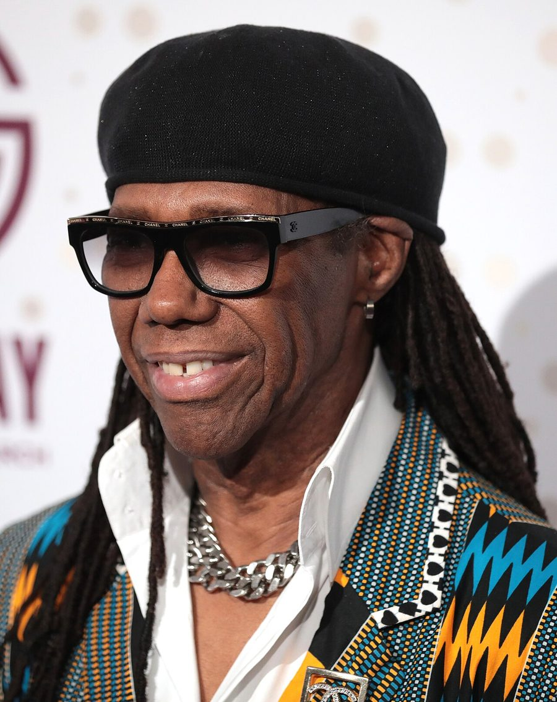

An Afternoon With Nile Rodgers



An Afternoon With Nile Rodgers
It’s before midday on the second day of the IMS Ibiza conference, the annual industry gathering held on the White Isle that takes full advantage of all the DJs, artists, promoters, record label heads and otherwise gathered at the end of May for the assorted opening parties of the season.
Disco icon Nile Rodgers is being interviewed by conference cofounder Pete Tong, in his usual brash and confident style. Rodgers was the keynote interviewee for the conference in 2012, in recognition of his status as one of the true enduring legends of dance culture. However, that was before his work on Daft Punk’s new opus Random Access Memories had even been revealed to the public. It’s definitely early in the morning for a bunch of Ibiza dwellers to be gathered in a conference room, but those who did drag themselves out of bed are treated to Rodgers performing the riff from Get Lucky live on his guitar. Or at least, attempting to perform it.
“I played it a year ago, how am I going to remember it now?” Rodgers tells Tong as he laughs, and twangs it out of key with the backing track that’s playing over the speakers. It’s perhaps reflective of the fact that the appeal of Get Lucky is deceptively simple; though good enough of course to get it into the #1 for weeks in both the US and UK, making it the unofficial anthem of the summer. Wonderfully though, Rodgers instead descends into an impromptu jam; which the producer insists is more in tune with how he makes magic in the studio.
“Here’s the secret of my recording life,” he tells the audience. “When I'm making music with someone, the magic of that moment is so important. Because I never know if this stuff is going to sell. So I try and have as much fun making the records as possible, because that might end up being the greatest moment that ever happens.
“We learned this as kids. We didn’t realise that we’d have hit records, we just wanted to have fun, and hopefully DJs would play our stuff. And even though I’ve had a gazillion hit records, I still approach it in the same way. You could see I was just having a blast there... I don’t wanna know a song before I hit the studio, don’t send me the demo. Let me learn it on the spot, and let me have fun. Let me be stupid, so I can then get smart and have fun on the journey”.
This belies the fact that Rodgers has often scored his successes via taking the unconventional route. His musical history goes back to his days as a New Work session player in his teens during the 60s, eventually joining with bassist to front seminal disco act Chic in the 70s; success that also saw him stepping up to serve as producer for a huge assortment of hit records. Everything from Chic landmarks like Le Freak and Good Times, 80s stadium-fillers like Madonna’s Like a Virgin album, to David Bowie’s biggest-selling album Let’s Dance. He’s far from a streamlined corporate hit-maker though.
“I have had a lot of #1 records, let me tell you something… Almost every one of them was a struggle. I’d say, thank god for the DJs who would actually listen to my shit! Because most of the time I would make it, and I would give it to the record company, and they would be like ‘what the hell is this’.” And the funny thing now is that if you listen to these records now, they often just sound like pop records. But at the time, it was like ‘whoooooo’. My career is littered with records like that, which they [the majors] just didn’t get.”
It’s an observation that suggests that the context of what makes a #1 hit record, whether it’s pop or dance, isn’t as clear as you might think. Rodgers goes against the tide, in that he’s got a lot of enthusiasm for the pop music of today. “I think pop is pretty incredible in today’s world. Sometimes I think pop records today sound like what underground records used to sound like in the old days. There’s a lot of the experimentation going on.”
Refreshed and reinvigorated
While Rodgers’ approach and style has gone in and out of fashion over the decades, there’s been a massive boost of interest in his work over the past year, with his contributions to Random Access Memories putting him in the spotlight again. Tong’s assertion at IMS was that Daft Punk called upon Rodgers’ experience, and in the process brought back an approach that had somewhat died in dance music. Real guitarists, real drummers, real everything.
“They came into my life, and brought me back to the world that I’ve always lived in,” Rodgers says of his work with Daft Punk.
And as it was succinctly put by Tong at IMS, “You've been fully embraced by the electronic community now.” It didn’t take long before Rodgers was spilling the beans on a wide host of collaborations he’s working on at the moment, with some of the names thrown around during the interview including Avicii, David Guetta, Disclosure and Chase and Status.
There might be a lot of animosity circulating about the ‘EDM’ phenomenon that’s blown up in the USA over the past few years, but this definitely isn’t reflected in Rodgers’ enthusiasm. In particular, he’s excited by his recent studio work with Avicii.
“My respect for him is just ridiculous. As a writer, as a partner, he allows me to be completely free in my ideas. You’d think he’d find it intimidating, but it’s exactly the opposite. He gets wrapped up in mixing it until 6am in the morning, where he’s there tearing it apart and making what I thought was crazy, into something really organised, wonderful, melodic and great. He’s probably one of my favourite songwriting partners in a long time, and that’s saying a lot.”
Talking about this work also led to some fascinating observations as to how Rodgers interacts with the continually evolving studio technology; considering that he’s a producer who largely still performs on his guitar. “It doesn’t change the way I compose, it changes the process in the studio,” Rodgers says of the technology. “When you see pictures of me and Avicii producing, he’s sitting there looking at a laptop, and I’m standing next to him playing riffs on a guitar. And then sometimes I’ll go through the console record right into his laptop,” he recalls.
“That process is really interesting, because imagine you’re playing with a partner, and he’s playing your part back to you? I can now even jam with myself. And what’s incredible about Avicii is that he’ll listen to audio files, in the same way that an artist looks at paint. It’s just another colour to him. I was playing a guitar part that I was sure was a funky lick, like in Get Lucky. And he made that shit the bassline! I was like whoa… I would have never have thought of that in a million years. So technology has changed the process… though I still play and compose on guitar or in my head.”
He also talked in-depth about his recent London studio sessions with Chase & Status. “We have enough material for two albums. Maybe three,” he confirmed. “What really kicked it off was they said, ‘let’s just start jamming’. I was like whoa, you just jumped into my world. We came up with a concept, and I said, let me just define the harmonic structure, and you guys can play the drum and bass over the top, which you do so unbelievably well… The next thing you know, we were recording everyday.”
When Rodgers was quizzed as to whether he listened to a lot of the new crossover dance acts like Disclosure, he quipped with a smile. “I’m gonna be working with Disclosure in a couple of days”. And some of the other revelations over the two hours was that he’s has been working in the studio with the prince of dance-pop himself David Guetta.
“The other day I wrote a groove with Guetta, and literally all I did was open my guitar case, the ideas started flowing and I was like ‘damn, turn on the recorder!’ And David went, ‘Whoa that’s incredible, that’s the most underground, cool thing I’ve ever heard. And I went, ‘Underground? David, that shit is pop,” he recalled, greeted by a roar of laughter from the audience.
Rodgers says it’s the collaborative process that continues to inspire him. “When you’re writing in the studio all by yourself, your ego can take over and you can think it's great, just because you did it. But when you’re with somebody else who you respect, and they have input, it helps keep you right sized, and I think it helps you make better music, because that can help you take it to another level. Daft Punk certainly did a great job of doing that.”
Undying love for dance
The single most inspiring thing about hearing Rodgers speak on dance music, is the fact he still carries all the passion you’d hear from a young producer. “When you have that music that lights up the dancefloor, it truly brings us together,” he spoke to the crowd. “I am so proud that I have chosen this artform, this medium, as my form of expression. I still get thrills when I see people dancing to a song that I wrote.”
He also spoke of the reinvigoration of his connection with club culture. “The last couple of years of my life have ben amazing. I’d never really left dance music, though I’d stopped going out to clubs. Because half of the fun for me was getting high. I didn’t want to go out and have to listen to somebody else talking to me who’s getting high,” he laughed heartily. “I’ve been there, so it’s a little bit hard for me. But to get back into the groove of creating with people, to take them on as partners and just start writing and writing, it’s been incredible.
“I still do love the music, and I can’t tell you how much new music I listen to all the time,” he said, relating how he’s constantly on the hunt for all of the obscure, underground club music that’s floating around out there, “that just feels like it’s grooving, avant-garde and cool.”
“The thing that’s great about dance music is it doesn’t have to be what I do, in order for me to dig it. I remember walking into a record shop five or six years ago, and I thought to myself, I still think of myself as a dance music producer; though my music largely wouldn’t even fit with what they call dance music now. But that doesn’t mean that I don’t love it. I loved Giorgio when I first heard him, the first time I heard Kraftwerk I couldn’t believe it.”
As someone with what he terms as an “open mind” to the spectrum of electronic music out there, Rodgers took the opportunity to speak out against music snobbery in club culture.
“There’s a place in this world for all of us. And that’s what’s great about dance music. Back in the days of Chic, when we switched from the RnB and jazz we were originally playing, we did it because of the openness of dance music, and of the whole disco movement that was going on.”
“We’re all in this together; we’re making music that moves our feet, our body, our soul. What I can’t stand is when I hear people write an artist’s work off as less valid. To me that’s just the wrong way to thing, and it’s certainly anti the spirit of this kind of music.”
It’s an important statement he relates to whats happening on the more commercial side of the dance music spectrum at the moment. “I was at Ultra earlier this year, and I go from one stage to the next, and I’d hear talk to someone who’d write off sets, and I’d just think, ‘dude, grow the fuck up’. Anyone can have a good night or a bad night, that’s what being an artist is all about. Sometimes we try to read the crowd, and we get it wrong. We don’t live or die by one performance, or one song, or one concert, or one piece of gear,” he said.
“I actually think that it’s interesting to have people who do it in a way that’s different from me... And that doesn’t mean we all have to like everybody’s records, that’s impossible. But at least respect the process, because we’re all artists, and approaching our artistry with different tools.”
The rebirth of Chic
Chic are now back on the touring circuit, and set for a high-profile performance on the West Holts stage at Glastonbury at the end of June. When quizzed whether a certain French pair of robots will be joining him on stage, Rodgers was coy, neither confirming nor denying the rumour. He was more forthcoming though about the decision to revive Chic.
“It’s hard to think in terms of Chic, because Chic really was Bernard Edwards and myself. When he passed away, which was a long time ago now, 17 years – I actually didn't want to do any Chic music again. There wasn’t any need, because I could live off royalties. Thank god,” he laughed. “And then this promoter came to me and he asked me to come back to Japan to play as Chic, and I said well okay, but why? And he said because I want you to pay tribute, to Bernard and the music that you guys did. And I actually never really thought about it like that. It’s funny that other people can see it differently than you do yourself. The next thing you know, I’m on stage and those first notes I played were really for Bernard… and I never stopped since.”
He also went into detail on a new Chic album, based on old uncompleted recordings that may or may not ever see the light of day. “Some wonderful person at the Warner tape library realised they had a lot of stuff that didn’t belong to them. When Bernard and I dissolved our partnership, we left the master tapes at the recording studio. The studio was sold, and all the property had to go somewhere. It all just got labelled as ‘Chic’, and in that was my film scores, unfinished collaborations I’d worked on, even the original jams for Let’s Dance…
“At the time we were working on a new Chic record, because we didn’t know we were gonna get dropped. So I have tracks of me playing with my old band that nobody’s ever heard. The stuff is pretty avant-garde and wacky… but if I worked on it with Avicii or Felix [Da Housecat] or guys that I have good relationships with, they could take a different look at it, or inspire me.”
“I think the songs have potential, and I think I will put them out and finish them…though I have to look in the mirror and say, do I really wanna do this? Or is it better to just let it lay in the vault and let it be romantic for me.”
Rodgers ended the session with a rather wonderful anecdote about Marvin Gaye, and the greatest show he ever performed. “My memory for all time,” he told the audience, who’d been gripped by the interview for over two hours by this stage.
“We played a show in San Diego, California, it was a big jazz festival and we were opening for Marvin Gaye. We had just released Good Times, and we didn’t even know how to play it yet. We didn’t think it’d go up the charts that fast… So we finished with Le Freak, and then we let the band go back to LA so it was only Bernard and me who were still there.
“But this massive baseball stadium was demanding an encore! When Marvin Gaye and his band were already setting up on stage… All we did in the end was jump in a player pitching cart, and we drove around the perimeter of the stadium, like we were the pope or the queen. And the only reason we did it was because the cops told us there was gonna be a riot! We were doing coke in the dressing room at the time, it was 1979 after all, we were right on it of course. And the cops knock on the door, we thought they were coming to arrest us! But they were asking for our help. But it was an incredible show, you felt like you could walk on the vibe, the spirit of the people would hold you up… and after doing that stupid little drive around, can you believe it, the cops came back and asked us to do it again.”
“But Marvin Gaye didn’t know us that day, so I’m thinking all my life that Marvin Gaye hates Chic. So about a year or two ago, I was speaking to a journalist, and I had just finished my book,” referring to his autobiography Le Freak: An Upside Down Story of Family, Disco, and Destiny that was published in late 2011. “He tells me about Marvin Gaye’s last interview, where he asked him about disco. He tells him he’s not into the four to the floor thing, but he tells him there’s one route he really likes… and it’s Chic!”
When the stadium crowd had started thumping their feet at that legendary stadium gig, Gaye had jumped under a table thinking it was an earthquake. “That aint no earthquake, that shit is just Chic,” laughed Rodgers. “It’s your opening act. That story is 100 percent true.”
If you weren't fortunate enough to catch Nile live in action alongisde Chic at Glastonbury you can watch their entire performance at the festival by clicking here
or catch them at Festival Number 6. which runs from the 13-15th September at Portmerion. More information and tickets can be obtained by clicking here